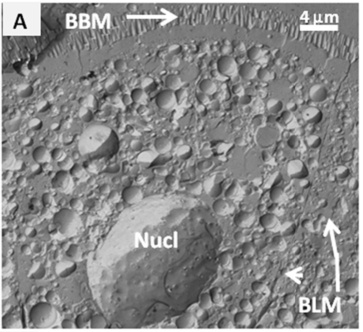

Apical entry and basolateral exit
A fixed observed cell establishes membrane-region context. The separate controlled ledger demonstrates idealized sugar transport accounting; no molecule is tracked or painted across the micrograph.

Observed SEM: BBM, apical brush-border membrane; BLM, basolateral membrane; Nucl, nucleus. The original 4 µm bar and arrows remain intact. The round profiles are cytosolic lipid droplets, not the sugar symbols in the ledger.
Mouse proximal enterocyte, four hours after corn-oil/cholesterol gavage; prepared by freeze fracture. This is not human tissue, live transport, or a resolved view of SGLT1, GLUT5 or GLUT2.
Soayfane et al. (2016), Nutr Metab13:48, Figure2A · CC BY4.0. Exact source crop; no recolouring or new leaders. Native/Fit enlargement · Source and preparation.
Separate conceptual transport ledger
An arbitrary batch of three sugar equivalents. Amounts are symbols, not cell inventories, concentrations, measured flux or kinetics. Entry and exit are ordered for teaching; physiological processes run concurrently. Twelve presentation seconds have no biological time meaning.
Before entry
| Symbolic amount | Lumen | Cell | Interstitium |
|---|---|---|---|
| Sugar equivalents Common bar scale 0–3 | 3.00 | 0.00 | 0.00 |
| Directly coupled Na⁺ | 6.00 | 0.00 | 0.00 |
Ordered glucose/galactose example
| State | Lumen | Cell | Interstitium |
|---|---|---|---|
| Before entry | 3 sugars + 6 Na⁺ | 0 | 0 |
| SGLT1 entry | 0 | 3 sugars + 6 Na⁺ | 0 |
| GLUT2 sugar exit | 0 | 6 Na⁺ | 3 sugars |
Fructose uses the same three-sugar order through GLUT5 entry and GLUT2 exit, with zero directly coupled Na⁺. This does not mean a real cell contains no sodium. Other sodium turnover is outside the ledger.
- Apical entry: SGLT1 couples two Na⁺ to one glucose/galactose under a favourable Na⁺ electrochemical driving condition. GLUT5 facilitates fructose entry without directly coupled Na⁺ or ATP.
- Basolateral exit: GLUT2 facilitates sugar exit when the sugar gradient favours it. It is not an ATP-driven outlet or a one-way valve.
- Separate concurrent maintenance: basolateral Na⁺/K⁺-ATPase exports three Na⁺ and imports two K⁺ per ATP, helping maintain the Na⁺ gradient. No synchronized pump cycles or finite ATP pool are imposed here.
Interstitium is not blood or lymph. Intestinal capillaries receive these sugars for portal delivery; separately packaged long-chain lipids use chylomicron and lacteal routes. The ledger does not model those vessels, sugar metabolism, water movement, membrane voltage or transporter regulation.
Starts paused. Play is an explicit request, including with reduced-motion preference. Preference changes, page hiding and printing pause it. Replay resets paused; stepping and seeking pause. Keyboard sliders use arrows; focus the ledger to pan with arrows/Home/End.
Mechanism sources: Chen et al. (1995), human SGLT1 coupling experiment; Patel et al. (2015), mouse GLUT5 transport/trafficking; Cheeseman (1993), rat basolateral GLUT2 transport. Experimental systems are distinct from the pictured mouse. Carrier identities come from physiology, not from visible protein labels in this SEM. Model, source and reproduction record.